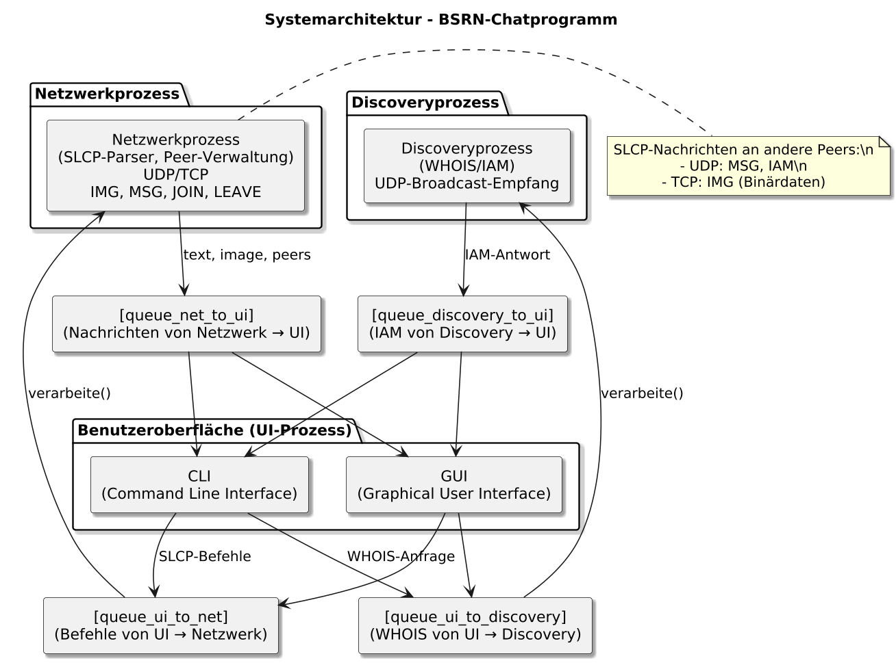
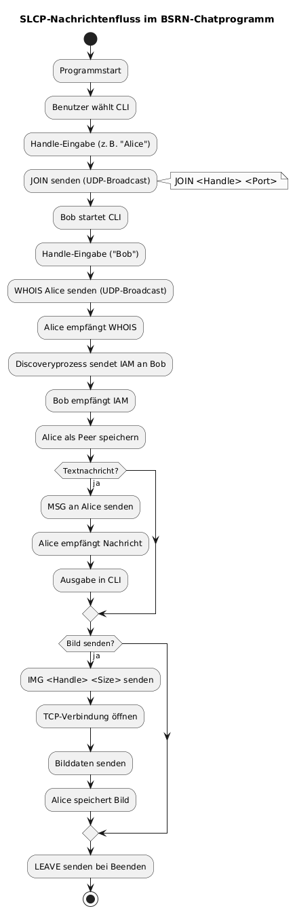
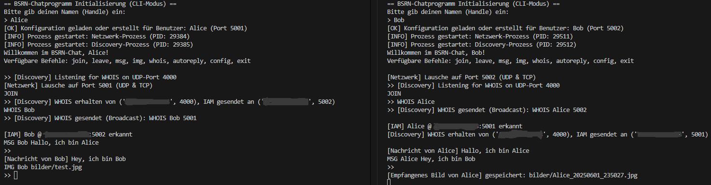

Einleitung
Das BSRN-Chatprogramm ist ein modular aufgebautes, dezentrales Peer-to-Peer-Kommunikationssystem, das den Austausch von Text- und Bildnachrichten in einem lokalen Netzwerk ermöglicht. Die gesamte Kommunikation erfolgt auf Basis des proprietären Simple Local Chat Protocols (SLCP), das vollständig implementiert wurde.
Ziel der Anwendung ist die systemnahe Entwicklung einer Chat-Lösung, die klassische Konzepte der Betriebssysteme praxisnah umsetzt: insbesondere Prozesse, Interprozesskommunikation (IPC), Sockets, parallele Verarbeitung und Dateikonfiguration.
Das System ist so konzipiert, dass mehrere Instanzen gleichzeitig auf einem oder mehreren Geräten betrieben werden können, ohne dass ein zentraler Server erforderlich ist. Alle Verbindungen sind direkt (Client-to-Client).
Gewählter Architekturansatz
Die Softwarearchitektur folgt einem strikt prozessgetrennten Aufbau nach dem Prinzip der Verantwortungsteilung. Jede Hauptkomponente läuft als separater Prozess:
- Benutzeroberflächenprozess (UI)
Ermöglicht dem Benutzer das Senden, Empfangen und Anzeigen von Nachrichten.
Kommandozeile (CLI) mit interaktiven Textbefehlen
- Netzwerkprozess
Übernimmt das Senden und Empfangen von SLCP-Kommandos.
SLCP-Kommandos wie JOIN, LEAVE, MSG, IMG, WHOIS und IAM werden verarbeitet. Für Textnachrichten wird UDP verwendet, für Bilder TCP. Die Verarbeitung ist eventbasiert und erfolgt asynchron.
- Discoveryprozess
Lauscht permanent auf WHOIS-Broadcasts über UDP und antwortet gegebenenfalls mit IAM. Zusätzlich verarbeitet er WHOIS-Anfragen, die intern von der Benutzeroberfläche kommen. IAM-Antworten werden zurück an die UI geleitet.
Die drei Prozesse kommunizieren ausschließlich über Multiprocessing-Queues (z. B. queue_ui_to_net, queue_net_to_ui, queue_ui_to_discovery, queue_discovery_to_ui). Dadurch wird eine vollständige Trennung der Zuständigkeiten, sowie Thread- und Prozesssicherheit gewährleistet.
Die gesamte Architektur ist darauf ausgelegt, parallelisierbar, fehlertolerant und erweiterbar zu sein. Ressourcen wie Ports oder IPs werden zur Laufzeit aus der Konfigurationsdatei config.toml dynamisch geladen.

Systemarchitektur mit drei gekapselten Hauptprozessen
Hauptfunktionen
Das BSRN-Chatprogramm bietet eine Vielzahl an Funktionen, die sowohl aus Benutzersicht als auch aus technischer Sicht relevant sind. Alle Funktionen sind vollständig in der SLCP-Logik verankert und durch Queues und Prozesse getrennt implementiert.
- Textnachrichten (MSG)
Direkter Versand von Kurznachrichten über UDP oder TCP an andere bekannte Clients im Netzwerk. Nachrichten werden in der CLI sofort dargestellt. Bilder werden empfangen, gespeichert und ihr Speicherpfad ausgegeben.
- Bildübertragung (IMG)
Bilder werden zunächst per SLCP-Kommando mit IMG <Handle> <Size> angekündigt.
Anschließend erfolgt die Übertragung des Bildes über TCP in der exakt spezifizierten Länge. .
- Teilnehmererkennung (WHOIS/IAM)
Jeder Client kann per UDP-Broadcast ermitteln, ob ein bestimmter Benutzername (Handle) im Netzwerk vorhanden ist.
Der passende Client antwortet direkt mit einer IAM-Nachricht inklusive IP-Adresse und Port.
- Peer-Verwaltung (intern)
Alle bekannten Teilnehmer werden mit IP und Port in einem peers-Dictionary verwaltet.
Diese Informationen werden bei Nachrichtenübertragung oder IAM-Erkennung automatisch aktualisiert.
- Autoreply bei Abwesenheit
Optional kann in der Konfigurationsdatei ein Autoreply-Text hinterlegt werden.
Wenn ein WHOIS empfangen wird, antwortet der Client automatisch per MSG mit diesem Text.
- Netzwerkmodus
Das System unterstützt echte Netzwerkinstallationen (z. B. zwei Rechner)
Protokollimplementierung (SLCP)
Das Projekt implementiert das vollständige Simple Local Chat Protocol (SLCP) gemäß Spezifikation.
Jede Nachricht ist eine UTF-8-codierte Textzeile mit genau einem UNIX-Zeilenumbruch \n.
Parameter mit Leerzeichen werden in doppelte Anführungszeichen gesetzt.
Unterstützte Kommandos:
JOIN <Handle> <Port>
Anmeldung eines Clients im Netzwerk – gesendet als UDP-Broadcast.LEAVE <Handle>
Abmeldung eines Clients – ebenfalls über UDP-Broadcast verteilt.WHOIS <Handle>
Erkundung eines bestimmten Benutzers per UDP-Broadcast.IAM <Handle> <IP> <Port>
Direktantwort auf WHOIS per UDP oder TCP mit IP-Adresse und Port.MSG <Handle> <Text>
Textnachricht direkt an einen bestimmten Empfänger – via UDP oder TCP.IMG <Handle> <Size>
Ankündigung eines Bildversands. Der eigentliche Binärtransfer erfolgt danach über TCP.
Technische Einschränkungen:
- Alle Nachrichten müssen UTF-8-codiert sein
- Maximale Länge: 512 Bytes pro Nachricht

Ablaufdiagramm der Nachrichtenübertragung über SLCP
Bedienung der Anwendung
- Benutzeroberfläche (CLI)
Die gesamte Bedienung erfolgt über Kommandozeilenbefehle.
Anschließend wird der Benutzername (Handle) eingegeben, der für alle SLCP-Kommandos verwendet wird. Die Konfigurationsdatei config.toml dient als zentrales Steuerungselement und enthält folgende Parameter:
handle – Benutzernameport_range – Portbereich für Netzwerkverbindungenwhoisport – Port für WHOIS-Broadcastautoreply – Antworttext bei Abwesenheitimagepath – Speicherort für empfangene Bilder
In der CLI erfolgt die Steuerung rein textbasiert über folgende Kommandos:
join – Anmeldung im Netzwerkleave – Abmeldung vom Chatmsg <Empfänger> <Nachricht> – Textnachricht sendenimg <Empfänger> <Pfad-zum-Bild> – Bild sendenwhois <Handle> – Teilnehmer im Netzwerk suchenautoreply <Text> – Abwesenheitstext setzenconfig – Konfigurationswerte anzeigenexit – Programm beenden (sichert LEAVE)
Eingehende Nachrichten und IAM-Antworten werden sofort im Terminal ausgegeben.

CLI mit JOIN, MSG, WHOIS und Rückmeldungen
Änderungen an Konfiguration oder Autoreply werden direkt in config.toml übernommen. Beim Beenden (z. B. durch Schließen des Fensters oder „Beenden“-Button) wird automatisch ein LEAVE <Handle>-Befehl per UDP-Broadcast gesendet.
Teilprobleme und Lösungen
Im Laufe der Entwicklung des Chatprogramms traten mehrere technische Herausforderungen auf, die im Rahmen der Projektumsetzung systematisch gelöst wurden. Nachfolgend sind die wichtigsten Probleme inklusive ihrer jeweiligen Lösung dokumentiert.
- UDP-Broadcast funktioniert nicht auf allen Netzwerkschnittstellen
Problem: Manche Systeme ignorieren UDP-Broadcasts, wenn an eine bestimmte IP-Adresse gebunden wird.
Lösung: Der UDP-Socket wird explizit an ‘'0.0.0.0’gebunden (leerer String im Code""`), wodurch alle verfügbaren Interfaces lauschen.
Zusätzlich wird die lokale IP-Adresse dynamisch über eine "Dummy-Verbindung" zu 8.8.8.8 ermittelt: s.connect(("8.8.8.8", 80))
ip = s.getsockname()[0]
- Mehrere Clients auf demselben Gerät gleichzeitig starten
Problem: Bei statischer Portbelegung würden parallele Instanzen auf demselben Rechner zu Portkonflikten führen.
Lösung: Die Datei config.toml enthält ein konfigurierbares port_range-Feld.
Beim Start durchsucht das Programm diesen Bereich nach dem ersten freien Port und reserviert ihn für den Client.
Die Information wird zusätzlich unter [[clients]] gespeichert, damit bekannte Benutzerports erhalten bleiben.
- Bildübertragung über SLCP scheitert an Protokollgrenzen
Problem: SLCP erlaubt nur textbasierte Nachrichten mit maximal 512 Bytes.
Lösung: Der Bildversand erfolgt zweistufig:
- Der Header
IMG <Handle> <Size>|<Kommentar> wird als SLCP-Nachricht gesendet.
- Die tatsächlichen Bilddaten werden direkt im Anschluss über eine separate TCP-Verbindung übertragen.
Die Anzahl der Bytes entspricht exakt dem im Header angegebenen Wert. Der Empfänger liest die Binärdaten blockweise, bis die erwartete Größe erreicht ist.
- Discoveryprozess darf nicht doppelt laufen
Problem: Wenn mehrere Clients gleichzeitig auf einem System laufen, würde ein mehrfach gestarteter Discoveryprozess mehrfach auf Port 4000 lauschen – was zu einem OSError führt.
Lösung: Es wird pro Startprozess entschieden, ob eine eigene Discovery-Instanz notwendig ist.
WHOIS-Anfragen aus der UI werden über IPC-Queues an den Discoveryprozess delegiert.
IAM-Antworten werden gezielt nur an den anfragenden Port gesendet, nicht gebroadcastet.
- Autoreply auf WHOIS-Anfragen erforderlich
Problem: Der Nutzer soll erkennen, wenn ein Teilnehmer "nicht aktiv" ist, obwohl er erreichbar ist.
Lösung: In config.toml kann ein Autoreply-Text definiert werden.
Wird eine WHOIS-Anfrage empfangen und der Benutzer ist nicht aktiv (CLI inaktiv), wird automatisch eine MSG <Handle> <Autoreply> an den Anfragenden gesendet. Die Logik befindet sich im Netzwerkprozess und prüft dabei: if sender != handle and get_config_value("autoreply"):
reply = get_config_value("autoreply")
auto_msg = build_message("MSG", handle, reply)
send_direct_udp(sender, auto_msg)
Erweiterungspotenzial
Durch den modularen Aufbau des BSRN-Chatprogramms ist die Anwendung ohne nennenswerte strukturelle Änderungen erweiterbar. Die getrennte Prozessarchitektur und die saubere SLCP-Integration ermöglichen folgende Ausbaustufen:
- Gruppenchats mit mehreren Empfängern
Der aktuelle SLCP-Befehl MSG <Handle> <Text> könnte um Mehrfachempfänger erweitert werden:
z. B. MSG Alice,Bob,Clara Hallo zusammen oder durch eine Gruppen-ID.
Die CLI müsste dazu eine Eingabelogik für Listen oder Gruppen einführen.
- Transportverschlüsselung (TLS)
Der TCP-Kanal für den Bildversand ist derzeit unverschlüsselt.
Eine Erweiterung auf TLS (z. B. mit ssl.wrap_socket) würde Vertraulichkeit und Integrität sichern.
Dabei müssten Zertifikate generiert, verwaltet und geprüft werden.
- Persistente Chat-Historie
Aktuell werden Nachrichten und Bilder nur temporär verarbeitet.
Eine Erweiterung könnte über sqlite3, CSV oder JSON-Logging erfolgen.
Die CLI könnte eine history-Funktion oder Exportoption erhalten.
- Benutzerstatus & Präsenzanzeige
Durch regelmäßige „heartbeat“-Nachrichten könnte der Online-Status ermittelt werden.
Teilnehmer, die über einen definierten Zeitraum inaktiv bleiben, würden als „offline“ markiert.
Die CLI könnte dies mit Symbolen oder Zeitstempeln visualisieren.
- Integration in bestehende Netzwerke
Das System kann ohne Anpassung in LAN-Umgebungen eingesetzt werden.
Für den Einsatz über VPN oder im WAN müsste SLCP um NAT-Erkennung, dynamische Portweiterleitung oder Relay-Server ergänzt werden.
Autoren
- Ayoub Bouda
- Studiengang: Wirtschaftsinformatik / Informatik
- Frankfurt University of Applied Sciences
- Modul: Betriebssysteme und Rechnernetze
- Semester: Sommersemester 2025